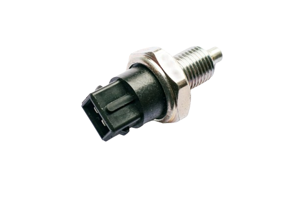

A car sensor is an electronic device that monitors various aspects of the vehicle and transmits data to the driver or ECU(Electronic Control Unit). In certain cases, the ECU makes modifications based on the data received from the sensor.
Car sensors are vital components in modern vehicles, playing key roles in monitoring various systems and ensuring optimal performance, safety, and efficiency.
A car contains a few sensors that monitor various aspects of the vehicle and transmit data to the driver or ECU(Electronic Control Unit) . In this post, we will discuss numerous types of sensors in a vehicle and their capabilities.
CATEGORIES OF CAR SENSORS
* ENGINE SENSORS
* VEHICLE PERFORMANCE SENSORS
* SAFETY SENSORS
* FLUID MONITORING SENSORS
* ENVIRONMENTAL SENSORS
* SECURITY SENSORS
* COMFORT AND CONVINIENCE SENSORS
* VOLTAGE SENSORS
Each of these sensors serves a specific purpose, contributing to the overall functionality, safety, and comfort of the vehicle. They continuously gather data and send signals to the vehicle's control units to make necessary adjustments.
TYPES OF ENGINE SENSORS
- Oxygen (O2) Sensor: Monitors the amount of oxygen in the exhaust gases, helping the engine control unit (ECU) adjust the air-fuel mixture for efficient combustion and reduced emissions.
- Mass Air Flow (MAF) Sensor: Measures the amount of air entering the engine, allowing the ECU to adjust fuel delivery accordingly for optimal combustion.
- Throttle Position Sensor (TPS) Tracks the position of the throttle valve, informing the ECU of how much power the driver is requesting. This helps in adjusting fuel delivery and ignition timing.
- Engine Coolant Temperature (ECT) Sensor: Monitors the temperature of the engine coolant, providing data to the ECU for regulating fuel injection, ignition timing, and cooling fan operation.
- Crankshaft Position Sensor (CKP): Detects the position and speed of the crankshaft, enabling precise ignition timing and fuel injection timing.
- Camshaft Position Sensor (CMP) Determines the position of the camshaft(s), aiding in fuel injection timing and synchronization with the crankshaft
- Temperature sensor
It is a sensor that can monitor the temperature of the engine to prevent overheating. Thermal management is crucial for the smooth running of a vehicle. Hence, it is one of the critical sensors in a car. The sensor is also responsible for the efficient functioning of the cooling system. The sensor can also help to warn the diver if the engine is running low on coolant or if the radiator is not working correctly.

- Map Sensor A map sensor, or Manifold Absolute Pressure sensor, is an essential component of the engine management system in modern vehicles. It measures the absolute pressure inside the intake manifold, providing crucial data to the Engine Control Unit (ECU) for optimizing fuel injection, ignition timing, and other engine parameters.
TYPES OF VEHICLE PERFORMANCE SENSORS
- Vehicle Speed sensor: Vehicle speed, also known as speed or velocity, refers to the rate at which a vehicle moves in a particular direction. It is typically measured in units such as kilometers per hour (km/h) or miles per hour (mph) and indicates how fast a vehicle is traveling relative to a reference point.
- Wheel Speed Sensor: These sensors monitor the speed of each wheel and are essential for functions like anti-lock braking systems (ABS) and traction control systems (TCS).
- Acceleration sensor: Acceleration sensors, also known as accelerometers, are devices that measure acceleration forces exerted on them. In automotive applications, these sensors are crucial for various functions related to vehicle dynamics, safety systems, and performance optimization.
- Brake Pressure Sensor: These sensors monitor brake fluid pressure, providing feedback to the ABS system to prevent wheel lock-up during braking.
- Gyroscopic sensor: Gyroscopic sensor, also known as gyroscopes or gyro sensor, are devices that measure angular velocity or rotation. In vehicles, gyroscopic sensors play a crucial role in various applications related to navigation, stabilization, and control.
- Transmission Sensors: These sensors monitor various parameters related to the transmission system, such as gear position, fluid temperature, and pressure, ensuring smooth gear shifts and optimal performance
TYPES OF SAFETY SENSORS
- The Anti-lock Braking System (ABS):
The Anti-lock Braking System (ABS) is a crucial safety feature in modern vehicles designed to prevent wheels from locking up during braking, thereby maintaining traction with the road surface and allowing the driver to maintain steering control.
- Traction Control System (TCS):
Traction Control System (TCS) is a vehicle safety feature designed to prevent wheel spin during acceleration on slippery or low-traction surfaces. It works by detecting when one or more wheels are spinning faster than the others, indicating a loss of traction, and then intervening to reduce engine power and/or apply braking force to the spinning wheel(s).
- Electric Stability Control (ESC):
Electric Stability Control (ESC), also known as Electronic Stability Control or Vehicle Stability Control (VSC), is an advanced safety feature in vehicles designed to help drivers maintain control during extreme steering maneuvers or in slippery road conditions. ESC uses various sensors and electronic control systems to detect and mitigate situations where the vehicle begins to lose directional stability
- Airbag sensors:
Airbag sensors are integral components of a vehicle's safety system, responsible for detecting the severity and nature of a collision and triggering the deployment of airbags when necessary.
- Tire Pressure Monitoring System (TPMS):
A Tire Pressure Monitoring System (TPMS) is a safety feature in vehicles designed to monitor the air pressure in the tires and alert the driver if the pressure in any tire drops below a predetermined threshold. TPMS helps improve vehicle safety, fuel efficiency, and tire longevity by ensuring that tires are properly inflated.
TYPES OF FLUID MONITORING SENSORS
- Oil pressure sensor: The oil pressure sensor is a critical component of a vehicle's engine monitoring system, responsible for measuring the oil pressure within the engine and providing feedback to the vehicle's onboard computer or gauge cluster. 
- Oil level sensor: The oil level sensor is a component of a vehicle's engine monitoring system responsible for detecting the level of engine oil in the oil pan or reservoir. Its primary function is to provide feedback to the driver or the vehicle's onboard computer regarding the oil level status.
- Fuel level sensor: The fuel level sensor is a component of a vehicle's fuel system responsible for measuring the level of fuel in the fuel tank. Its primary function is to provide accurate feedback to the driver or the vehicle's onboard computer regarding the amount of fuel remaining.
- Coolant level sensor: The coolant level sensor is a component of a vehicle's cooling system responsible for monitoring the level of coolant (antifreeze) in the radiator or coolant reservoir. Its primary function is to provide feedback to the driver or the vehicle's onboard computer regarding the coolant level status.
- Brake fluid level sensor: The brake fluid level sensor is a component of a vehicle's braking system responsible for monitoring the level of brake fluid in the brake fluid reservoir. Its primary function is to provide feedback to the driver or the vehicle's onboard computer regarding the brake fluid level status.
- Washer fluid level sensor:
The washer fluid level sensor is a component of a vehicle's washer fluid system responsible for monitoring the level of washer fluid in the washer fluid reservoir. Its primary function is to provide feedback to the driver or the vehicle's onboard computer regarding the washer fluid level status.
TYPES OF ENVIRONMENTAL SENSORS
- Ambient air temperature sensor: A sunlight sensor, also known as a solar sensor or sunload sensor, is a component of a vehicle's climate control system designed to detect the intensity and direction of sunlight entering the vehicle's interior. Its primary function is to automatically adjust the climate control settings, such as the air conditioning and heating, based on the amount of sunlight present.
- Sunlight sensor: A sunlight sensor, also known as a solar sensor or sunload sensor, is a component of a vehicle's climate control system designed to detect the intensity and direction of sunlight entering the vehicle's interior. Its primary function is to automatically adjust the climate control settings, such as the air conditioning and heating, based on the amount of sunlight present.
- Rain sensor: A rain sensor, also known as a rain-sensing windshield wiper system, is a feature found in many modern vehicles that automatically controls the operation of windshield wipers based on the detection of rain or moisture on the windshield.
- Exhaust gas temperature (EGT) sensor: An exhaust gas temperature (EGT) sensor is a component of a vehicle's engine management system responsible for monitoring the temperature of the exhaust gases as they exit the engine. Its primary function is to provide feedback to the vehicle's onboard computer regarding the exhaust gas temperature, which is important for engine performance, emissions control, and protecting engine components.
- Particulate matter (PM) sensor:
A particulate matter (PM) sensor, also known as a particulate matter sensor or particle sensor, is a component of a vehicle's emissions control system designed to monitor the concentration of particulate matter in the exhaust gases. Its primary function is to provide feedback to the vehicle's onboard computer regarding the level of particulate emissions, particularly for diesel-powered vehicles equipped with diesel particulate filters (DPF) or gasoline vehicles with gasoline particulate filters (GPF).
TYPES OF SECURITY SENSORS
- Vehicle Immobilizer System Sensor: A vehicle immobilizer system sensor is a component of a car's security system designed to prevent unauthorized access and theft. The sensor typically detects key signals or other authentication methods to allow the engine to start. If the correct signal is not detected, the system immobilizes the vehicle, preventing it from starting or running.
- Door and Window Sensors: These sensors consist of two parts – a magnet and a switch – which are installed on a door or window frame and the corresponding door or window itself. When the door or window is closed, the magnet keeps the switch closed. If the door or window is opened when the alarm system is armed, the switch separates from the magnet, triggering the alarm.
- Motion Sensors:
These sensors detect motion within a designated area. They can be passive infrared (PIR) sensors, which detect changes in infrared radiation caused by movement, or they can use other technologies like ultrasonic or microwave sensors. Motion sensors are commonly used in indoor spaces to detect intruders.
TYPES OF COMFORT AND CONVINIENCE SENSORS
- Lidar sensor:
Lidar is a type of sensor that uses laser light to create a 3D map of the environment. It is a more accurate and precise sensor than radar, but it is also more expensive and can be affected by weather conditions. Lidar tracks obstacles and vehicles to maintain safe distances; it helps identify road signs, traffic signals, and road markings for real-time hazard analysis, ensuring autonomous vehicles' effective operation.

- Radar sensor:
Radar is an acronym for “Radio Detection and Ranging” – in short it means: radio-based detection and distance measurement. A radar sensor is a beam-based sensor and is used to detect objects, for example other vehicles and pedestrians, and measure their distance to the vehicle, and their relative speeds. It is a type of sensor that uses radio waves to detect objects.

- Parking Sensor:
A parking sensor is a device installed on a vehicle to assist drivers in parking maneuvers by detecting obstacles in the vehicle's vicinity. Parking sensors use ultrasonic or electromagnetic technology to detect objects and provide feedback to the driver, helping to prevent collisions and improve parking accuracy.

- Light Sensors: Light sensors, also known as photodetectors or photoresistors, are electronic components that detect and measure light levels in their surroundings. They are used in various applications to automatically control lighting systems, adjust display brightness, trigger alarms, and more.
- keyless entry sensor:
Keyless entry sensors are components of modern vehicle security systems that allow drivers to unlock and lock their vehicles without using a traditional mechanical key. These sensors typically use radio frequency signals to communicate with a key fob or a smartphone app, enabling convenient access to the vehicle.

- Automatic Climate Control Sensors
Automatic climate control sensors are components of a vehicle's HVAC (Heating, Ventilation, and Air Conditioning) system that monitor various environmental factors inside and outside the vehicle to maintain a comfortable cabin temperature automatically. These sensors work together to regulate the temperature, airflow, and other climate control settings based on the preferences of the occupants and the current conditions.

TYPES OF VOLTAGE SENSORS
- Battery Voltage Sensor: Monitors the voltage level of the vehicle's battery. It provides information about the battery's state of charge and health and helps prevent battery overcharging or undercharging, which can affect starting performance and overall battery life.
- Alternator Voltage Regulator: Regulates the voltage output of the alternator. It ensures that the electrical system receives a steady voltage supply for charging the battery and powering vehicle electronics, also Prevents voltage spikes or drops that could damage sensitive electronic components and ensures consistent electrical system performance.
- Powertrain Control Module (PCM): Monitors various voltage signals throughout the vehicle. It controls engine and transmission operation based on input from sensors and actuators, it ensures proper engine performance, fuel efficiency, and emissions control by regulating voltage levels to critical engine and transmission components.
- Oxygen Sensor Heater Voltage Sensor: Monitors voltage supply to the oxygen sensor heater circuit. It ensures that the oxygen sensor reaches operating temperature quickly for accurate emissions control. It is Integrated into the engine control module (ECM) or oxygen sensor control module.This sensor helps maintain optimal engine performance and emissions compliance by ensuring proper operation of the oxygen sensor heater.
- Voltage Regulator Module: Regulates voltage output to specific vehicle systems or components. It ensures consistent voltage levels to sensitive electronic components such as the engine control module (ECM), transmission control module (TCM), and various sensors. It's located in the vehicle's electrical system, typically near the battery or alternator. This sensor prevents overvoltage or undervoltage conditions that could lead to component damage or system malfunction.
Each of these sensors serves a specific purpose, contributing to the overall functionality, safety, and comfort of the vehicle. They continuously gather data and send signals to the vehicle's control units to make necessary adjustments.